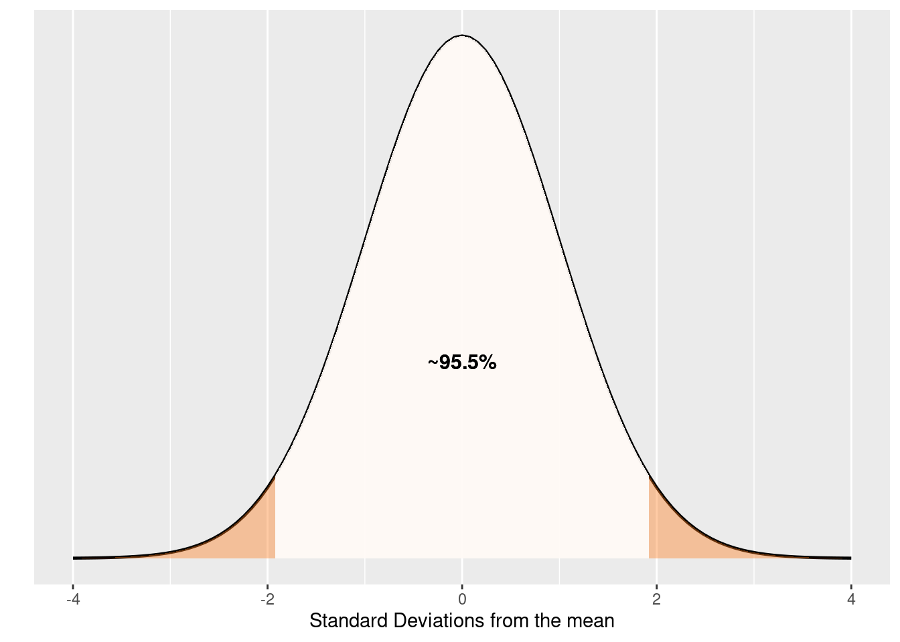
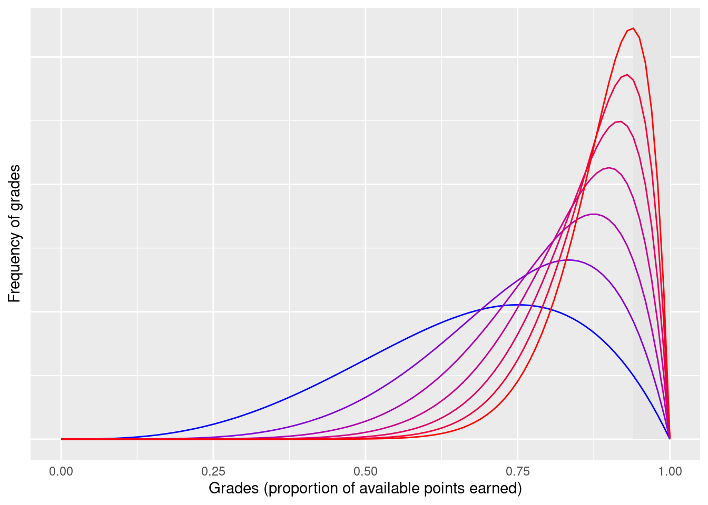
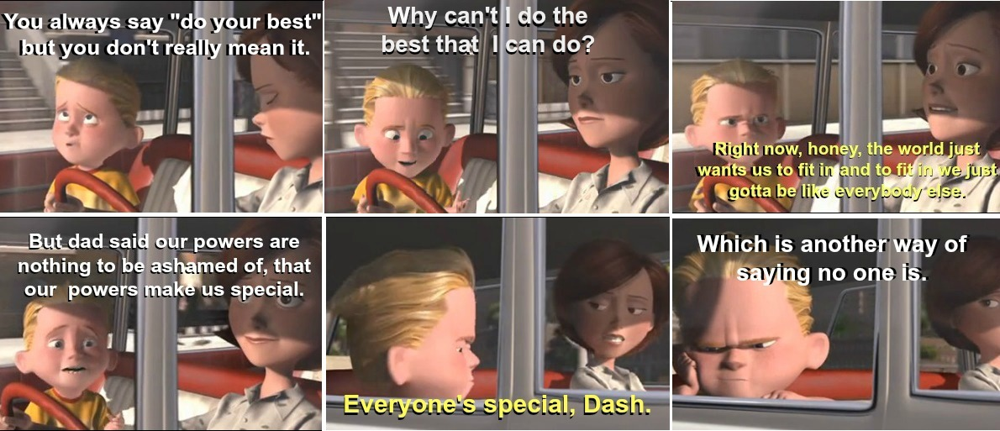

![]()

I’m writing this post to document my own learning on reading from Teaching Tips and Teaching at its Best.
Calibrated instruments
McKeachie’s chapter 10 starts with a set of questions that attack the problem of grading from a philosophical angle.
What are grades?
Do we agree that grades are communication tools?
That is an extremely challenging and insightful question. Grades are indeed communications tools and they convey information at many levels. A single letter (or number) on an arbitrary scale will be used to attempt to define person X in system Y. Define it? To whom? Mostly, to a third party who doesn’t know anything about person X in system Y. Grades are communication devices that arise from a totally utilitarian need. From this perspective, it is difficult to overlook how absurd the whole grading situation is.
The third party (aka, whoever reads that grade) will add another layer to this story. The grade’s value will be interpreted differently by students, parents, other teachers within the university, and future employers. When we assigning grades that do not represent the student , we can easily create false expectations and close opportunities. Miscommunication hurts everyone. More than anything, we negate the learning process by corrupting the mechanisms that are vital to growth.
I stand with students first. Students have the right to know how well they performed, what their achievements are and the things that they need to improve. As far as I understand, learning and improving performance are contingent on positive and negative feedback. If I had to choose, I would have no grades but feedback, I would teach for mastery. But that is a discussion for another article and, since we live in a world dominated by grades, we have to play that game for now.
How valid is the instrument on which grades are based?
Whatever we measure (and communicate), it has to be measured using a valid instrument. Indeed, selecting accurate indicators of student performance might be the hardest part of the job.
I align with McKeachie’s advice because my natural tendency is to measure performance using an absolute scale. However, I am not alien of solid argumentation against this practice. First, I am not owner of the one and only absolute scale, I am subjective and conditioned by my own background. Second, I also fail. Teacher failure comes in many shapes and flavors (from not engaging and creating the proper learning environment to testing with wrong questions). In those situations, it is common sense to look for relative measures, evaluate how students performed in general terms. The reasoning would be that, if all students failed to understand concept A either:
- The teacher was ineffective during the learning and feedback phase and/or
- The teacher was ineffective during the testing phase
It would be really difficult to argue in favor of students getting punished by a suboptimal performance of the teacher. On the brightside, it is unlikely that, over the long run, consistently low performing students are such because they faced such a consistent set of low performing teachers. That is why there is bigger emphasis on averages than individual grades. Averages are useful within the individual but also to compare across individuals. Another measure used for comparisons across individuals are ranks.
Being the nth best of an extremely well performing group should not put you into an “under-achiever” box. Chance had you sharing space with a sample of highly capable, highly driven individuals. Furthermore, this group likely worked well because all students contributed extraordinarily into the production of the learning experience (i.e, assignments, projects, debates, discussions, role play). However, outstanding performance is unlikely to explain grade inflation (see below).
Being the best of a group that is homogeneously underperforming is not indicative of academic achievement or technical skill. Therefore, the individual should not be promoted by the label of “top of the class”. Reality says he is ranked first but that label is devoid of descriptive information and, most importantly, it fails to meet criteria.
How reliable is it?
Here’s where we have to start thinking about big scale. Given a test, or any device, that produces value or score, we desire that score to be reliable across time and multiple graders. We feel as if people being measured by the same ruler were paramount. Given no temporal change on the average student profile, multiple-choice based tests are the most reliable devices because they are likely to produce the same result regardless of who is grading them. But what are they testing? Aren’t we sacrificing accuracy to gain reliability? Even forgetting about the temporal change on students, I consider constraining production to a standardized one-word answer to generate more damage than unreliable long essay questions. If the rigid testing structure is not constrained enough, we can add the time variable. Let’s put you on a one minute per question stopwatch!
So, how can we get the good of both worlds? Should we request essay only questions? Everyone’s workload increases if we do that. How are we going to deal with retaliation?
What are grades communicating?
Grades mean different things depending on who is reading. Students are (hopefully) curious about their learning and grade of achievement. They are looking for a concrete proof that they are on the correct path. Additionally, they are the only ones who know the background story of that grade (i.e, how they earned it). Parents are likely to be expecting a safety report on their investment, looking forward to be ensured that everything is under control. Employers are probably looking for a predictor of competency. I feel compelled to examine the phenomenon from the perspective of an employer because I believe that educational institutions have a social responsibility on the professionalization of the labor force. Employers come in many forms and requirements may vary. However, they entrust others the role of training at the entry level and prediction of future performance. For employers request different traits in suitable employees, they also weight differently on requirements for available jobs.
But employers face an ocean of candidates and must sort through to fill finite open positions. The pragmatic way of doing so within a constrained budged and time span is to be reductionist and assume things. They assume some things like “schools know what employers need and prepare students for it” or “good grades are predictive of absolute good performance”.
Grades should not be the only thing to look at. PhD admissions committees are heavily weighted on a different trust system (i.e, letters of recommendation). Academics that want to hire a trainee to do research rely on other academics that have seen how the candidate works. Something like “the best predictor of being able to do something is having done it before”. This system is by no means perfect. I only mention it here as an example of a weighing method that adds another dimension to whatever grades provide.
The inference problem
Yes, grades are communication tools, but they are also variables used for inference. In order for any predictor to be useful, it is often the case that one should know or assume the distribution.
The Normal distribution could be thought of as the general example. It may well be what most people have it as a first guess. Maybe they would not go for an exactly Normal distribution, but the main concepts are certainly there, they are going for a distribution that has the following properties:
- Unimodal and symmetrical, with mode being equal to the mean.
- Vast majority of individuals are around acceptable deviations from the mean.
- Exceptional individuals are infrequent (< 2.5% on each side).
But reality doesn’t work like that, we have minimum and maximum grades, which dramatically constrains the range of the distribution. Additionally, we tend to have a passing grade, usually set for the equivalent of 60% of the available points. We have to acknowledge that majority of students are capable of working towards such grades and it is the purpose of any learning experience to make the goal achievable. So, let’s add some reality to the distribution. A more realistic distribution would be:
- Somewhat assymetrical, with mode being greater than the passing mark.
- Effective teaching prevents extreme individuals on the very low range.
Now, we should try to see what happens when we progressively skew grades from zero towards a perfect score. Putting aside the cause of the shift for a moment, what effectively happens is that more people get into the exceptional area, which in this case I chose to be the top 5%.

Thinking about communication, we could see no actual problem. In fact, it’s correctly stated in McKeachie’s chapter 10. The meaning of grades is not a problem as long as those who interpret the grade do it understanding the current meaning. I see two main issues with this idea:
- It is suboptimal to request people/managers to adapt to the current value. What reference frame would they use? That is why we have standard units, for example 1.
- In any system that measures, a wider dynamic range is preferred. Collapsing all students to the 5% of the range, and further condensing that into one bin (letter A) eliminates variation.
Grade modification
Assuming a priori distributions might work well in statistical mechanics but it is certainly not the way to grade students. I do not align with practices like curving the grade, that is, assuming a grade distribution of any kind to force students into blocks where they don’t naturally belong. On chapter 10, McKechie stands strong against such policies: “grading on the curve is educationally dysfunctional”.
Deflating
Deflating grades on purpose is a practice that produces a fit to a normal distribution according to an arbitrary central tendency and spread. I find that practice completely against the goals of teaching, at any level. Enforcing higher standards produces a subsequent deflation, but it’s a different animal species that grading on the curve (more on that below).
Inflating
Here is where the extra credit that shifts the distribution comes in. Granted, shifting by adding credit is not the only way, teachers might also lower the bar so much that anyone can walk past it. Inflation has been going in the United States for quite some time now, here is some data analysis. Pressure to increase grades comes from everywhere. Universities operating on a client based model depend upon costumer satisfaction to keep functioning. Moreover, whenever students do not pay themselves for the education, costumer and user become separated entities. Thus, universities can work as an insurance policy and a 4-year party at the same time. How do they keep the costumer satisfaction up? They know what they are selling, they are selling a promise and happy users. They serve themselves of the average salary of college graduates to advertise themselves, just as an insurance policy for retirement. They either enforce, overlook or seldom punish grade inflation. They keep users happy. They have all the incentives to fail in favor of the user, because the pressure is one sided. Where is the line of parents demanding grade deflation?
They also invest in branding because it is difficult to be critic of anything if you feel represented it. Brands use abstract symbols that are vague enough to be interpreted positively by everyone. I wonder what would happen if schools used the time course of their own grade inflation instead of their name initials or mascot on their hoodies, T-shirts and mugs. The truth is universities have it difficult, even if they tried to do something about it. There would have to be a broad acknowledgement of the fact, nation wide commitment, a top down (federal?) program to combat inflation. Such commitment should be transparent enough that it doesn’t hurt students’ future. Every other alternative will hinder the small group of students whose grades are deflated.
Grade inflation existed for a noble cause in the past. If my students were dependent on good grades to stay out of a war, I would certainly inflate. Notice grade escalation during the Vietnam war period. This also serves as an example of how an unofficial rule can spread with no top down regulation. Teachers did what they thought best and that resulted in a systemic change. Maybe this collective behavior was not secret, during the 1970-1980 period grades deflated. Unfortunately, grades have been steadily increasing since then. If current trends continue, eventually no other letter than A will be awarded.
Lingering questions
I have my questions about curving and the consequences of the current path. Where does the normal distribution come from? In other words, could it be possible that, for a given set of standards, the long-term distribution of fairly graded individuals follow a normal distribution?
What happens when everyone gets an A? That is a question that has been seriously treated here. I will add some humor to an overly long and boring post.

A systemic problem
I have to disagree with McKechie’s on this one. On chapter 10, it is stated that professors cannot change the meaning of grades individually. I disagree because individuals following simple rules can create massive patterns. Teaching, as currently done by humans, is not devoid of individual human factors that make it far from perfect. Days have only 24 hours. Teachers get tired and have other obligations to devote their energies to. Even with over-achiever teaching rockstars, devotion for their profession and waking ours have a limit. The load of grading and managing hundreds of individual complains about the most minuscule difference in interpretation is unbearable. And yet, it is a right of the students to be given effective feedback. It is only natural for them to look for ways to diminish the burden. Teachers not only game the system, their own career is dependent on it. They know that hard graders receive negative evaluations by students and any rational individual would act to avoid negative impact on their path towards tenure. However, I would like to conclude this section with the words of professor Harvey Mansfield: “A professor has the right to give the grades he wants, but that’s always been understood with a responsibility that’s attached to it, mainly to see to it that you don’t debase our common currency”.
General Improvement
It is probably true that teaching has improved. Productivity, access to information, and computer proficiency have certainly improved. Those are fantastic news, but they should not serve as supporting evidence for scale deformation. We might be training the best generation of students ever, but shortening the dynamic range is not informative (remember grades are a communication tool). If anything, the rescaling should maintain an informative dynamic range and there is good reason to set higher competency standards.
Meet criteria
Educational content should provide concepts and skills that are critical to promote achievement of goals. How critical is the content? If indeed critical (e.g, techniques and procedures for open heart surgery), then it is self-evident that criterion based methods should be enforced. If not, we should then have a conversation about why we have non-critical content in higher education.
Footnotes
Reuse
Citation
BibTeX citation:
@online{andina2017,
author = {Andina, Matias},
title = {About Grades},
date = {2017-12-19},
url = {https://mauribo2.github.io/WebSite/posts/2017-12-19-about-grades/},
langid = {en}
}
For attribution, please cite this work as:
Andina, Matias. 2017. “About Grades.” December 19. https://mauribo2.github.io/WebSite/posts/2017-12-19-about-grades/.